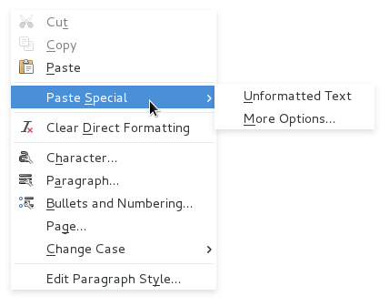
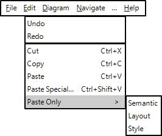
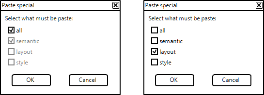
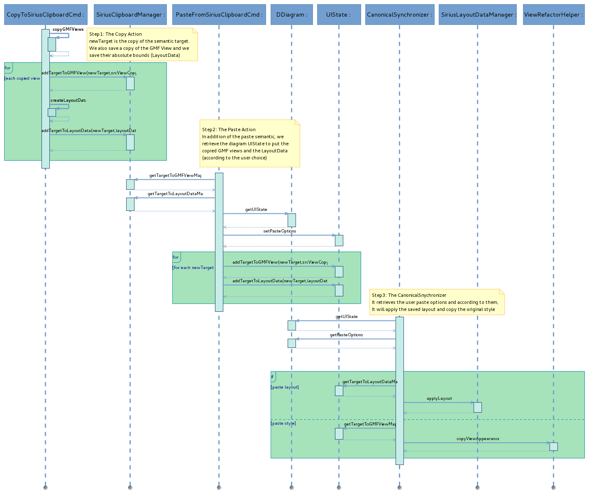

Summary: Have a unique copy/paste action able to paste the semantic, the layout and/or the style.
| Version | Status | Date | Authors | Changes |
|---|---|---|---|---|
| v0.1 | DRAFT | 2016-04-18 | fbarbin | Initial version. |
| v0.2 | DRAFT | 2016-05-09 | fbarbin | modification following a first review. |
| v0.3 | PROPOSAL | 2016-06-06 | fbarbin | Proposal status following the last review |
| v0.4 | PROPOSAL | 2016-06-08 | lredor | Add override capability for the «Paste Special» popup |
Relevant tickets:
Currently there are two kind of copy/paste in Sirius:
Unfortunately it’s currently not possible to copy and paste both semantic and layout nor the style of the graphical elements.
Instead of having several kinds of copy/paste features, it would be interesting to have only one copy action and then a paste special action that will let the choice between paste the semantic, the layout and/or the style.
Example of Paste Special menu:

This enhancement starts from several initial needs:
The idea is to keep only one Copy action (standard Ctrl+C) with a Paste special. By default, the standard Paste action (Ctrl+V) will paste the semantic eObjects, the graphical elements layout and the elements style. But the user will also have the choice to perform a special paste, and choose among several options:
Or any combination among those choices.
For more details about the user interface, see the
User Interface
section.
In manual refresh, the changes following a semantic model modification will appear only after a manual refresh. That is disturbing for the user who does not see anything appears after having perform the paste action. After a paste action the diagram will be refreshed even if the automatic refresh is deactivated.
The behavior of the Paste semantic will stay the same than the current one.
The Paste layout will replicate the layout to the same semantic elements between diagrams. That is the current behavior. In addition, if the paste semantic is applied with the paste layout, the layout of the original graphical elements is applied on the newly created elements (the copies).
The current extension point org.eclipse.sirius.diagram.ui.layoutDataManager will be kept.
The Paste style will apply the same style to the target elements. All the source elements style properties (customized or not) will be applied to the target elements as custom styles if they are different than the default ones. That means if the copied element background is different from the one to paste, the background will appear as a custom feature. If the background is the same, nothing is modified.
The paste style will have a similar behavior to the
Copy Appearance action.
To default copy-paste behavior will be a semantic copy-paste by keeping the layout and style of the source graphical elements. A «Paste Special» menu will let the possibility to make its own combination. The more common actions like paste layout, paste semantic, or paste style will have their own entry in the menu.

This sketch shows the future context menu.

This sketch shows the paste special dialog. This popup will be handled by the
UICallBack. This will allow to override the default implementation and forbid some combinations for example.
The
UICallBack (
org.eclipse.sirius.tools.api.command.ui.UICallBack) can be overridden with
SiriusEditPlugin.getPlugin().setUiCallback(UICallBack)
The old copy layout and paste layout actions will be removed from the tabbar to be consistent with this new feature.
The Copy semantic is insured by
org.eclipse.sirius.diagram.ui.tools.internal.commands.emf.CopyToSiriusClipboardCommand and the paste by
org.eclipse.sirius.diagram.ui.tools.internal.commands.emf.PasteFromSiriusClipboardCommand.
The general idea is saving the layout and style data during the semantic copy. After having paste the semantic elements, the new GMF views will be created by the
CanonicalSynchronizer. The layout and the style should be applied in
org.eclipse.sirius.diagram.ui.internal.refresh.diagram.DDiagramCanonicalSynchronizer.refreshSemantic()
GMF insures the Copy Appearance action by using
org.eclipse.gmf.runtime.diagram.core.util.ViewRefactorHelper.copyViewAppearance(View, View, List). In the case of the
Copy Appearance action, we override the GMF
PropertyHandlerEditPolicy to also copy the style in the Sirius model:
org.eclipse.sirius.diagram.ui.graphical.edit.policies.SiriusPropertyHandlerEditPolicy.buildApplyAppearancePropertiesCommand(ApplyAppearancePropertiesRequest)

The
org.eclipse.sirius.viewpoint.UIState will be enriched to manage saved layout and style data.
the
org.eclipse.sirius.diagram.ui.tools.api.layout.SiriusLayoutDataManager interface will have a new method to allow applying a layout on a GMF Diagram. Currently, it is only possible on a root EditPart.
The
org.eclipse.sirius.diagram.ui.tools.api.layout.SiriusLayoutDataManager interface will probably evolve to handle GMF Views as layout target (the element on which the layout will be apply) in addition of editParts. The API changes will be detail later.
As described in the Detailed Specification section, the diagram contextual menu and edit menu will have additional entries for the paste special options. The old Copy Layout and Paste Layout actions will also be removed from the tabbar.
The User documentation will be updated to describe the new behavior of the Copy/Paste and all the new paste options.
Starting from a typical diagram with lists, containers, nodes, border-nodes and with an exhaustive list of customized styles, we should test the different combinations of copy/paste:
For each combination, check the behavior on the same diagram, on a new empty diagram (except if there is no paste semantic) or a diagram with existing elements (to test the paste layout and paste styles only)
Use the
UIState owned by the
DDiagram avoid to use a singleton to store information like layout and style data. As the
UIState is contextual to one diagram, the canonical synchronizer can retrieve the layout and the style information safely.
The «Paste Special» popup can be overridden to hide some entry. But this feature does not allow to extend the «copy/paste» with a new kind of paste (for example). There is no entry point to override/change the menus linked to this feature. This is maybe possible with standard Eclipse capability but it’s not in the scope of this feature.